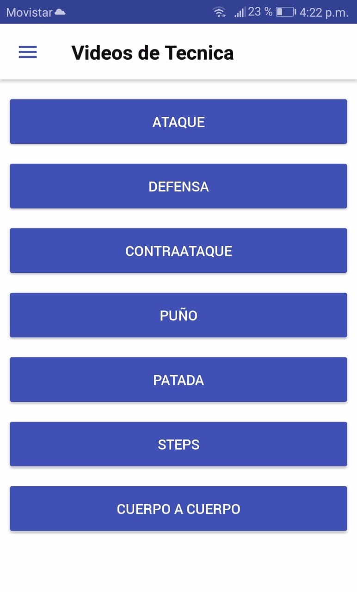
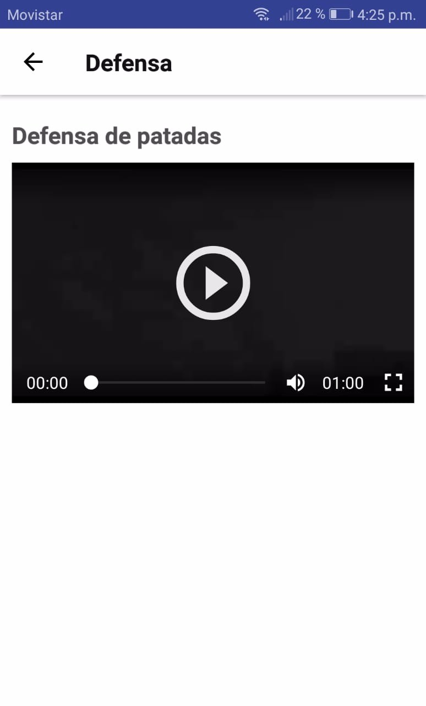

En esta pantalla podremos ver una gran cantidad de videos de diversas técnicas del Taekwondo, patadas, bloqueos, saltos, entre muchas otras. El objetivo de los videos es facilitar el aprendizaje de las técnicas, aclarar dudas y comparar la ejecución de los profesionales que grabaron los videos con la propia.
Las mismas están agrupadas en diversas categorías para facilitar la tarea de encontrar una técnica en particular. Haciendo click en cada categoría se accede a los videos correspondientes.
 Haciendo click en el botón de “Play” se comienzan a reproducir los videos y apretando el botón de “Pausa” se puede detener su reproducción. Haciendo click en la flecha para atrás de la esquina superior izquierda se accede al menú principal de los videos con todas las categorías.